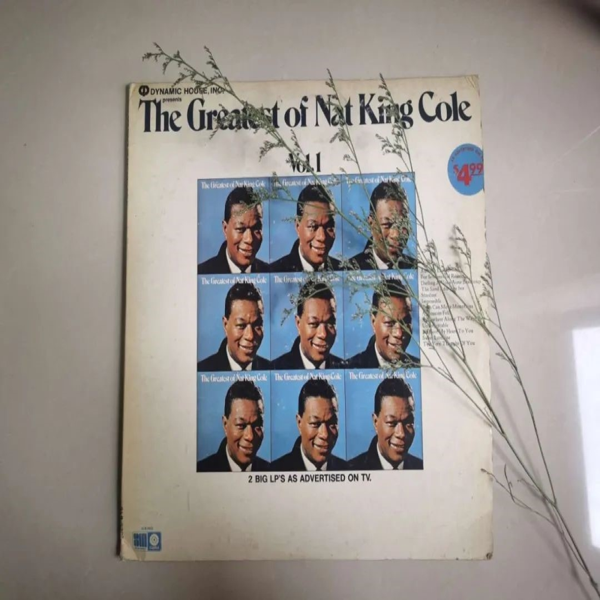
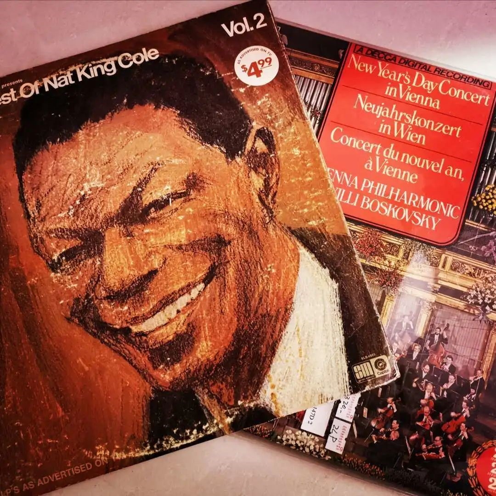

怎么样?有没有一种置身咖啡馆里享受惬意下午茶时光的感觉呢?
接下来让我们一起来了解一下今天的主人公,在爵士世界里摇摆的情歌王子——纳京高
纳京高是情歌史上最杰出的男性之一,只有 Frank Sinatra, Bing Crosby 和 Billy Eckstine 的嗓音能与之相提并论。他发自内心的对歌曲的演绎方式绝对是独一无二的。他谱的乐句无与伦比,表演技能那么的娴熟,在理解和表达美国乐曲方面, 他达到了一个与众不同、高人一等的大师境界。在不到三十年的娱乐生涯里,Nat丰富了“音乐”一词的内涵;建立了国会唱片公司(Capitol Records)，为后来的黑人艺员托出了一条珍贵的事业之路。尽管那时他已是炙手可热的新星,愿意接纳一个黑人作表演的饭店和宾馆还是少之又少,实际上他仅在一家酒店作过表演。一张张拒绝的面孔上写满了傲慢与偏见,但纳京高还是克服过来了。他早年在拉斯韦加斯的成功演出突破了肤色的界线,后来在电视中的演出更为黑人演艺员打开了成功之门。
纳京高的一生中有两段重迭的经历。他是为数不多的真正的摇摆乐钢琴家之一,一方面,他的演奏深受厄尔.海恩斯的激励,另一方面,他又影响了另外一位大师奥斯卡.彼得森。他是一位超级的流行民谣歌手,在这个领域取得的巨大的商业上的成功,给他的钢琴演奏产生了不良的影响,以致於在1949年之后,几乎没有什么人知道他的钢琴演奏的成就。或许如果将他的才华分到两个不同人的身上结果会更好。
在四十年代,纳京高录制了数量巨大的精彩的爵士音乐,包括了在1944年由莱斯特.扬,伊利诺伊.雅克和第一爵士管弦乐团担任特色乐师的音乐会,以及为数众多的他的三重奏为国会大厦唱片公司录制的唱片的选曲。
突然之间对于无数喜欢他的非爵士乐公众来说他成为了一位著名的歌手,许多新的歌迷惊讶地发现原来这位著名歌手钢琴弹得也十分出色!
1931年美国无线电公司(RCA)试制成功331/3转/分的密纹唱片(LongPlay,简称LP)。原来唱片转速为每分钟78转,密纹唱片为每分钟33.5转。大大延长了播放时间。在材料上,由于氯醋共聚树脂代替了紫胶树脂,唱片的颗粒变细,微小的振动也能录制下来,这样高保真的效果得到进一步体现。黑胶唱片是在20世纪占统治地位的音乐格式。从你78岁的祖母到45岁的单身汉,黑胶因为听觉上感觉更保真而且更便宜所以完美的涵盖了所有年龄段的人。作为那个年代的“重量级“人物(类似于80年代的邓丽君),纳京高自然录制了大量的黑胶唱片。
这就是我们今天要介绍的第一张唱片啦!《The Greatest of Nat King Cole》
表演者: Nat King Cole
流派: 爵士
专辑类型: 专辑
介质: 黑胶
发行时间: 1972
出版者: Dynamic House, Inc.
它分了两期录制,图中所示的是第一期
vol.01
 1.“Autumn Leaves”
2.For sentimental reason
3.Darling Je Vous Aime Beaucoup
4.The Sand And The Sea
5…Stardust
6.Impossible
7.Faith Can Move Mountains
8.A Blossom Fell
9.Somewhere Along The Way
10.Unforgettable
11.If I Give My Heart To You
12.Sweet Lorraine
13.The Very Thought Of You
vol.02
 1.Nature Boy
2.Walking My Baby Back Home
3.When I Fall In Love
4.Too Young
5.That Sunday That Summer
6.Ballerina
7.People
8.It Happens To Be Me
9.Pretend
10.Smile
11.Answer My Love
12.L-O-V-E
13.Ramblin&apos
Copyright © 黑Miss胶
互联网ICP备案:苏ICP备2021007984号-1